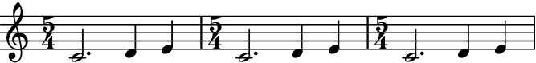
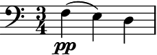
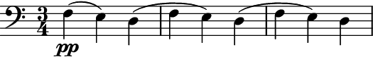
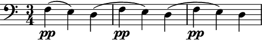

Repeater¶
-
class
auxjad.Repeater(contents: abjad.core.Container.Container, *, omit_time_signatures: bool = False, force_identical_time_signatures: bool = False, reposition_clefs: bool = True, reposition_dynamics: bool = True, reposition_slurs: bool = True)¶ This class takes an
abjad.Container(or child class) as input and outputs anabjad.Selectionwithnrepetitions of it.- Basic usage:
Calling the object will return an
abjad.Selectiongenerated by the repeating process. The argument of__call__()defines the number of repetitions.>>> container = abjad.Container(r"c'4 d'4 e'4 f'4") >>> repeater = auxjad.Repeater(container) >>> notes = repeater(2) >>> staff = abjad.Staff(notes) >>> abjad.f(staff) \new Staff { c'4 d'4 e'4 f'4 c'4 d'4 e'4 f'4 }

The property
current_windowcan be used to access the last results.>>> notes = repeater.current_window() >>> staff = abjad.Staff(notes) >>> abjad.f(staff) \new Staff { c'4 d'4 e'4 f'4 c'4 d'4 e'4 f'4 }

- Time signatures:
This class handles different time signatures.
>>> container = abjad.Staff(r"\time 3/4 c'2. \time 2/4 r2 g'2") >>> repeater = auxjad.Repeater(container) >>> notes = repeater(3) >>> staff = abjad.Staff(notes) >>> abjad.f(staff) \new Staff { \time 3/4 c'2. \time 2/4 r2 g'2 \time 3/4 c'2. \time 2/4 r2 g'2 \time 3/4 c'2. \time 2/4 r2 g'2 }
- Underfull containers:
Containers that are not fully filled in are automatically closed by this class in its output. Containers without a time signature are assumed to be in
4/4(which is LilyPond’s default).>>> container = abjad.Container(r"c'4 d'4 e'4") >>> repeater = auxjad.Repeater(container) >>> notes = repeater(3) >>> staff = abjad.Staff(notes) >>> abjad.f(staff) \new Staff { \time 3/4 c'4 d'4 e'4 c'4 d'4 e'4 c'4 d'4 e'4 }

>>> container = abjad.Staff(r"\time 3/4 c'4 d'4 e'4 f'2") >>> repeater = auxjad.Repeater(container) >>> notes = repeater(2) >>> staff = abjad.Staff(notes) >>> abjad.f(staff) \new Staff { \time 3/4 c'4 d'4 e'4 \time 2/4 f'2 \time 3/4 c'4 d'4 e'4 \time 2/4 f'2 }
- Using as iterator:
The instances of this class can also be used as an iterator, which can then be used in a for loop. Note that unlike the methods
__call__()andoutput_n(), time signatures are added to each window returned by the shuffler. Use the functionauxjad.mutate().remove_repeated_time_signatures()to clean the output when using this class in this way. It is also important to note that abreakstatement is needed when using this class as an iterator. The reason is that repeating is a process that can happen indefinitely (unlike some of the other classes in this library).>>> container = abjad.Container(r"\time 3/4 c'4 d'4 e'4") >>> repeater = auxjad.Repeater(container) >>> staff = abjad.Staff() >>> for window in repeater: ... staff.append(window) ... if abjad.inspect(staff).duration() == abjad.Duration((9, 4)): ... break >>> auxjad.mutate(staff[:]).remove_repeated_time_signatures() >>> abjad.f(staff) \new Staff { \time 3/4 c'4 d'4 e'4 c'4 d'4 e'4 c'4 d'4 e'4 }
- Arguments and properties:
This class can take many optional keyword arguments during its creation. attr:omit_time_signatures will remove all time signatures from the output while
force_identical_time_signatureswill force all time signatures (including repeated ones) to be added to the output (both areFalseby default). When set toTrue, the propertiesreposition_clefs,reposition_dynamics, andreposition_slurswill invoke the mutationsauxjad.mutate().reposition_clefs(),auxjad.mutate().reposition_dynamics(), andauxjad.mutate().reposition_slurs()(default values areTrue). Check their documentation for more information on how they operate.>>> container = abjad.Container(r"\time 3/4 c'4 d'4 e'4") >>> repeater = auxjad.Repeater(container, ... omit_time_signatures=False, ... force_identical_time_signatures=False, ... reposition_clefs=True, ... reposition_dynamics=True, ... reposition_slurs=True, ... ) >>> repeater.omit_time_signatures False >>> repeater.force_identical_time_signatures False >>> repeater.reposition_clefs True >>> repeater.reposition_dynamics True >>> repeater.reposition_slurs True
Use the properties below to change these values after initialisation.
>>> repeater.omit_time_signatures = True >>> repeater.force_identical_time_signatures = True >>> repeater.reposition_clefs = False >>> repeater.reposition_dynamics = False >>> repeater.reposition_slurs = False >>> repeater.omit_time_signatures True >>> repeater.force_identical_time_signatures True >>> repeater.reposition_clefs False >>> repeater.reposition_dynamics False >>> repeater.reposition_slurs False
contents:Use the
contentsproperty to read as well as overwrite the contents of the repeater.>>> container = abjad.Container(r"c'4 d'4 e'4 f'4") >>> repeater = auxjad.Repeater(container) >>> notes = repeater(2) >>> staff = abjad.Staff(notes) >>> abjad.f(staff) \new Staff { c'4 d'4 e'4 f'4 c'4 d'4 e'4 f'4 }
>>> repeater.contents = abjad.Container(r"c'16 d'16 e'16 f'16 g'2.") >>> notes = repeater(2) >>> staff = abjad.Staff(notes) >>> abjad.f(staff) \new Staff { c'16 d'16 e'16 f'16 g'2. c'16 d'16 e'16 f'16 g'2. }
output_n():This is an alias of
__call__(). Takes an argumentnfor the number of repetitions.>>> container = abjad.Container(r"c'4 d'4 e'4 f'4") >>> repeater = auxjad.Repeater(container) >>> notes = repeater.output_n(2) >>> staff = abjad.Staff(notes) >>> abjad.f(staff) \new Staff { c'4 d'4 e'4 f'4 c'4 d'4 e'4 f'4 }

omit_time_signatures:To disable time signatures altogether, initialise this class with the keyword argument
omit_time_signaturesset toTrue(default isFalse), or use theomit_time_signaturesproperty after initialisation.>>> container = abjad.Staff(r"c'4 d'4 e'4") >>> repeater = auxjad.Repeater(container, ... omit_time_signatures=True, ... ) >>> notes = repeater(3) >>> staff = abjad.Staff(notes) >>> abjad.f(staff) \new Staff { c'4 d'4 e'4 c'4 d'4 e'4 c'4 d'4 e'4 }
force_identical_time_signatures:To force time signatures in all iterations of the output, initialise this class with the keyword argument
force_identical_time_signaturesset toTrue(default isFalse), or use theforce_identical_time_signaturesproperty after initialisation.>>> container = abjad.Staff(r"\time 5/4 c'2. d'4 e'4") >>> repeater = auxjad.Repeater(container, ... force_identical_time_signatures=True, ... ) >>> notes = repeater(3) >>> staff = abjad.Staff(notes) >>> abjad.f(staff) \new Staff { \time 5/4 c'2. d'4 e'4 \time 5/4 c'2. d'4 e'4 \time 5/4 c'2. d'4 e'4 }
- Dynamics, slurs, and clefs:
By default, this class automatically handles dynamics, slurs, and clefs, optimising their position and omitting repetitions.
>>> container = abjad.Staff(r"\clef bass f4\pp( e4) d4(") >>> abjad.f(staff) \new Staff { \time 3/4 \clef "bass" f4 \pp ( e4 ) d4 ( }
This is done by invoking
auxjad.mutate().reposition_clefs(),auxjad.mutate().reposition_dynamics(), andauxjad.mutate().reposition_slurs(). Check their documentation for more information on how they operate.>>> repeater = auxjad.Repeater(container) >>> notes = repeater(3) >>> staff = abjad.Staff(notes) >>> abjad.f(staff) \new Staff { \time 3/4 \clef "bass" f4 \pp ( e4 ) d4 ( f4 e4 ) d4 ( f4 e4 ) d4 }
Set theproperties
reposition_clefs,reposition_dynamics, andreposition_slurstoFalseto not invoke these mutations.>>> repeater = auxjad.Repeater(container, ... reposition_clefs=False, ... reposition_dynamics=False, ... reposition_slurs=False, ... ) >>> notes = repeater(3) >>> staff = abjad.Staff(notes) >>> abjad.f(staff) \new Staff { \time 3/4 \clef "bass" f4 \pp ( e4 ) d4 ( \clef "bass" f4 \pp ( e4 ) d4 ( \clef "bass" f4 \pp ( e4 ) d4 ( }

Error
If a container is malformed, i.e. it has an underfilled measure before a time signature change, this class will raise a
ValueErrorexception.>>> container = abjad.Container(r"\time 5/4 g''1 \time 4/4 f'1") >>> repeater = auxjad.Repeater(container) ValueError: 'contents' is malformed, with an underfull measure preceding a time signature change
Methods
__call__([n])Calls the repeater process for
niterations, returning anabjad.Selection.__init__(contents, *[, …])Initialises self.
__iter__()Returns an iterator, allowing instances to be used as iterators.
__next__()Calls the shuffling process for one iteration, returning an
abjad.Selection.__repr__()Returns interpreter representation of
contents.output_n([n])Calls the repeater process for
niterations, returning anabjad.Selection.Attributes
The
abjad.Containerto be shuffled.Read-only property, returns the previously output selection.
When
True, all time signatures will be printed in the output, including repeated ones .When
True, all time signatures will be omitted from the output.When
True,auxjad.mutate().reposition_clefs()is invoked.When
True,auxjad.mutate().reposition_dynamics()is invoked.When
True,auxjad.mutate().reposition_slurs()is invoked.-
__call__(n: int = 1) → abjad.core.Selection.Selection¶ Calls the repeater process for
niterations, returning anabjad.Selection. Defaultnis1.
-
__init__(contents: abjad.core.Container.Container, *, omit_time_signatures: bool = False, force_identical_time_signatures: bool = False, reposition_clefs: bool = True, reposition_dynamics: bool = True, reposition_slurs: bool = True) → None¶ Initialises self.
-
__next__() → abjad.core.Selection.Selection¶ Calls the shuffling process for one iteration, returning an
abjad.Selection.
-
property
contents¶ The
abjad.Containerto be shuffled.
-
property
current_window¶ Read-only property, returns the previously output selection.
-
property
force_identical_time_signatures¶ When
True, all time signatures will be printed in the output, including repeated ones .
-
property
omit_time_signatures¶ When
True, all time signatures will be omitted from the output.
-
output_n(n: int = 1) → abjad.core.Selection.Selection¶ Calls the repeater process for
niterations, returning anabjad.Selection. Defaultnis1.
-
property
reposition_clefs¶ When
True,auxjad.mutate().reposition_clefs()is invoked.
-
property
reposition_dynamics¶ When
True,auxjad.mutate().reposition_dynamics()is invoked.
-
property
reposition_slurs¶ When
True,auxjad.mutate().reposition_slurs()is invoked.